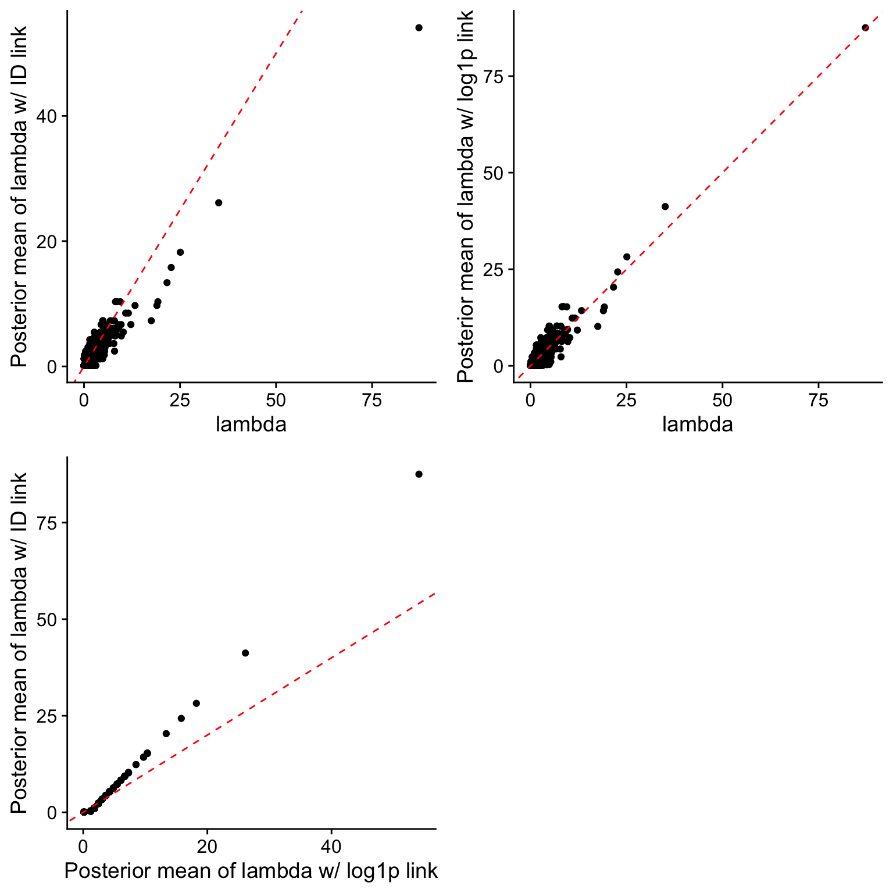

Last updated: 2024-07-24
Checks: 6 1
Knit directory: log1p_experiments/
This reproducible R Markdown analysis was created with workflowr (version 1.7.1). The Checks tab describes the reproducibility checks that were applied when the results were created. The Past versions tab lists the development history.
The R Markdown file has unstaged changes. To know which version of
the R Markdown file created these results, you’ll want to first commit
it to the Git repo. If you’re still working on the analysis, you can
ignore this warning. When you’re finished, you can run
wflow_publish to commit the R Markdown file and build the
HTML.
Great job! The global environment was empty. Objects defined in the global environment can affect the analysis in your R Markdown file in unknown ways. For reproduciblity it’s best to always run the code in an empty environment.
The command set.seed(20240402) was run prior to running
the code in the R Markdown file. Setting a seed ensures that any results
that rely on randomness, e.g. subsampling or permutations, are
reproducible.
Great job! Recording the operating system, R version, and package versions is critical for reproducibility.
Nice! There were no cached chunks for this analysis, so you can be confident that you successfully produced the results during this run.
Great job! Using relative paths to the files within your workflowr project makes it easier to run your code on other machines.
Great! You are using Git for version control. Tracking code development and connecting the code version to the results is critical for reproducibility.
The results in this page were generated with repository version 6d263f6. See the Past versions tab to see a history of the changes made to the R Markdown and HTML files.
Note that you need to be careful to ensure that all relevant files for
the analysis have been committed to Git prior to generating the results
(you can use wflow_publish or
wflow_git_commit). workflowr only checks the R Markdown
file, but you know if there are other scripts or data files that it
depends on. Below is the status of the Git repository when the results
were generated:
Ignored files:
Ignored: .Rhistory
Unstaged changes:
Modified: analysis/ebnm.Rmd
Note that any generated files, e.g. HTML, png, CSS, etc., are not included in this status report because it is ok for generated content to have uncommitted changes.
These are the previous versions of the repository in which changes were
made to the R Markdown (analysis/ebnm.Rmd) and HTML
(docs/ebnm.html) files. If you’ve configured a remote Git
repository (see ?wflow_git_remote), click on the hyperlinks
in the table below to view the files as they were in that past version.
| File | Version | Author | Date | Message |
|---|---|---|---|---|
| Rmd | 6d263f6 | Eric Weine | 2024-07-05 | added normal approximation |
| html | 6d263f6 | Eric Weine | 2024-07-05 | added normal approximation |
library(ebnm)Here, we consider the following two poisson means problems:
First, the “log1p link” model:
\[\begin{align*} y_{i} &\sim \text{Poisson}(\lambda_{i}) \\ \log(1 + \lambda_{i}) &= b_{i} \\ b_{1}, \dots, b_{n} & \overset{\text{iid}}{\sim} \pi_{0} \delta_{0} + (1 - \pi_{0}) \cdot \text{Exponential}(\mu) \end{align*}\]
Second, the identity link model:
\[\begin{align*} y_{i} &\sim \text{Poisson}(\lambda_{i}) \\ \lambda_{1}, \dots, \lambda_{n} & \overset{\text{iid}}{\sim} \pi_{0} \delta_{0} + (1 - \pi_{0}) \cdot \text{Exponential}(\mu) \end{align*}\]
First, I simulate data from the log1p model with \(\pi_{0} = \frac{2}{5}\), \(\mu = 2\), and \(n = 3,000\).
set.seed(1)
n <- 3000
pi0 <- (2/5)
mu <- 2
b <- rexp(n = n, rate = mu)
z <- rbinom(n = n, size = 1, pi0)
b[which(z == 1)] <- 0
lambda <- exp(b) - 1
y <- rpois(n = n, lambda)In Matthew’s vignette, for the log1p model, he suggests the following approximation for the likelihood of \(b_{i}\) based on a Taylor expansion:
\[\begin{equation*} L(b_{i}) \approx N(\hat{b}(y_{i}), s^{2}(y_{i})), \end{equation*}\]
where
\[\begin{equation*} \hat{b}(y_{i}) = \begin{cases} \log(1 + y_{i}) & \text{if $y_{i} > 0$}\\ -1 & \text{if $y_{i} = 0$} \end{cases} \end{equation*}\]
and
\[\begin{equation*} s^{2}(y_{i}) = \begin{cases} \frac{y_{i}}{(1 + y_{i})^{2}} & \text{if $y_{i} > 0$}\\ 1 & \text{if $y_{i} = 0$} \end{cases} \end{equation*}\]
This approximation is implemented below:
b_hat <- log1p(y)
b_hat[which(y == 0)] <- -1
s2 <- y / ((1 + y) ^ 2)
s2[which(y == 0)] <- 1Now, we estimate both the ebnm approximation to the log1p model and the identity link model.
get_marginal_lik <- function(y, pi0, mu) {
p <- 1 / (1 + mu)
lik <- pi0 * ifelse(y == 0, 1, 0) + (1 - pi0) * (1 - p) * (p ^ y)
total_lik <- sum(log(lik))
return(total_lik)
}
eb_opt_fn <- function(par, y) {
pi0 <- boot::inv.logit(par[1])
mu <- exp(par[2])
-get_marginal_lik(y, pi0, mu)
}
get_eb_opt <- function(y) {
opt_out <- optim(
par = rnorm(2),
fn = eb_opt_fn,
y = y
)
pi0_out <- boot::inv.logit(opt_out$par[1])
mu_out <- exp(opt_out$par[2])
return(
list(
pi0 = pi0_out,
mu = mu_out
)
)
}
get_pm <- function(y, pi0, mu) {
nz_pm <- (y + 1) / (mu + 1)
p <- 1 / (1 + mu)
post_pi0 <- ifelse(
y == 0,
pi0 / (
pi0 + (1 - pi0) * (1 - p)
),
0
)
pm <- (1 - post_pi0) * nz_pm
return(pm)
}
solve_pois_mean_id_link <- function(y) {
eb_par <- get_eb_opt(y)
pm <- get_pm(y, eb_par$pi0, eb_par$mu)
return(
list(
pi0 = eb_par$pi0,
mu = eb_par$mu,
pm = pm
)
)
}
out <- ebnm(x = b_hat, s = sqrt(s2), prior_family = "point_exponential")
lambda_pm <- exp(out$posterior$mean) - 1
id_link_out <- solve_pois_mean_id_link(y)
df_out <- data.frame(
y = y,
lambda_pm = lambda_pm,
lambda_pm_id = id_link_out$pm,
lambda = lambda,
b_pm = out$posterior$mean,
b = b,
b_hat = log1p(y)
)Now, it’s useful to compare the posterior mean estimates of lambda from the different models.
library(ggplot2)
g1 <- ggplot(data = df_out) +
geom_point(aes(x = lambda, y = lambda_pm_id)) +
geom_abline(slope = 1, intercept = 0, color = "red", linetype = "dashed") +
cowplot::theme_cowplot() +
ylab("Posterior mean of lambda w/ ID link") +
xlab("lambda")
g2 <- ggplot(data = df_out) +
geom_point(aes(x = lambda, y = lambda_pm)) +
geom_abline(slope = 1, intercept = 0, color = "red", linetype = "dashed") +
cowplot::theme_cowplot() +
ylab("Posterior mean of lambda w/ log1p link") +
xlab("lambda")
g3 <- ggplot(data = df_out) +
geom_point(aes(x = lambda_pm_id, y = lambda_pm)) +
geom_abline(slope = 1, intercept = 0, color = "red", linetype = "dashed") +
cowplot::theme_cowplot() +
xlab("Posterior mean of lambda w/ log1p link") +
ylab("Posterior mean of lambda w/ ID link")
library(ggpubr)
ggarrange(g1, g2, g3, nrow = 2, ncol = 2)
| Version | Author | Date |
|---|---|---|
| 6d263f6 | Eric Weine | 2024-07-05 |
mae_log1p <- mean(abs(df_out$lambda_pm - df_out$lambda))
mae_id <- mean(abs(df_out$lambda_pm_id - df_out$lambda))
mse_log1p <- mean((df_out$lambda_pm - df_out$lambda) ^ 2)
mse_id <- mean((df_out$lambda_pm_id - df_out$lambda) ^ 2)
library(glue)
print(glue("MAE of log1p model: {mae_log1p}"))MAE of log1p model: 0.357313409812868print(glue("MAE of id model: {mae_id}"))MAE of id model: 0.399484469590449print(glue("MSE of log1p model: {mse_log1p}"))MSE of log1p model: 0.561823148542956print(glue("MSE of id model: {mse_id}"))MSE of id model: 0.938107850431593In this case, it seems like the identity link undershrinks for small values of \(y\), where it overshrinks for large values of \(y\). It is reassuring that the approximation to the true model at least outperforms the wrong model in this simple scenario.
Now, I’d like to simulate data such that both models introduced above are mis-specified and compare the performance of the different fitting procedures.
Below, I simulate data from the following model:
\[\begin{align*} y_{i} &\sim \text{Poisson}(\lambda_{i}) \\ \lambda_{1}, \dots, \lambda_{n} & \overset{\text{iid}}{\sim} \pi_{0} \delta_{0} + (1 - \pi_{0}) \cdot \chi^{2}_{4} \end{align*}\]
with \(\pi_{0} = \frac{2}{5}\). Below are the posterior means fitting the two models described above:
set.seed(10)
n <- 3000
pi0 <- (2/5)
lambda <- rchisq(n = n, df = 4)
z <- rbinom(n = n, size = 1, pi0)
lambda[which(z == 1)] <- 0
y <- rpois(n = n, lambda)b_hat <- log1p(y)
b_hat[which(y == 0)] <- -1
s2 <- y / ((1 + y) ^ 2)
s2[which(y == 0)] <- 1
out <- ebnm(x = b_hat, s = sqrt(s2), prior_family = "point_exponential")
lambda_pm <- exp(out$posterior$mean) - 1
id_link_out <- solve_pois_mean_id_link(y)
df_out <- data.frame(
y = y,
lambda_pm = lambda_pm,
lambda_pm_id = id_link_out$pm,
lambda = lambda,
b_pm = out$posterior$mean,
b = b,
b_hat = log1p(y)
)g1 <- ggplot(data = df_out) +
geom_point(aes(x = lambda, y = lambda_pm_id)) +
geom_abline(slope = 1, intercept = 0, color = "red", linetype = "dashed") +
cowplot::theme_cowplot() +
ylab("Posterior mean of lambda w/ ID link") +
xlab("lambda")
g2 <- ggplot(data = df_out) +
geom_point(aes(x = lambda, y = lambda_pm)) +
geom_abline(slope = 1, intercept = 0, color = "red", linetype = "dashed") +
cowplot::theme_cowplot() +
ylab("Posterior mean of lambda w/ log1p link") +
xlab("lambda")
g3 <- ggplot(data = df_out) +
geom_point(aes(x = lambda_pm_id, y = lambda_pm)) +
geom_abline(slope = 1, intercept = 0, color = "red", linetype = "dashed") +
cowplot::theme_cowplot() +
xlab("Posterior mean of lambda w/ log1p link") +
ylab("Posterior mean of lambda w/ ID link")
ggarrange(g1, g2, g3, nrow = 2, ncol = 2)mae_log1p <- mean(abs(df_out$lambda_pm - df_out$lambda))
mae_id <- mean(abs(df_out$lambda_pm_id - df_out$lambda))
mse_log1p <- mean((df_out$lambda_pm - df_out$lambda) ^ 2)
mse_id <- mean((df_out$lambda_pm_id - df_out$lambda) ^ 2)
print(glue("MAE of log1p model: {mae_log1p}"))MAE of log1p model: 1.0251796957126print(glue("MAE of id model: {mae_id}"))MAE of id model: 0.892868312942123print(glue("MSE of log1p model: {mse_log1p}"))MSE of log1p model: 2.43898787053223print(glue("MSE of id model: {mse_id}"))MSE of id model: 1.88633463615161Here, it seems that the identity link performs better, but the advantage is slight. Changing random seeds generally doesn’t seem to change the results greatly.
Finally, I simulate data from the following model:
\[\begin{align*} y_{i} &\sim \text{Poisson}(\lambda_{i}) \\ \lambda_{1}, \dots, \lambda_{n} & \overset{\text{iid}}{\sim} \pi_{0} \delta_{0} + (1 - \pi_{0}) \cdot \text{LogNormal}(0, 1.25) \end{align*}\]
with \(\pi_{0} = \frac{1}{2}\). Below are the results:
set.seed(10)
n <- 3000
pi0 <- (1/2)
lambda <- exp(rnorm(n = n, mean = 0, sd = sqrt(1.25)))
z <- rbinom(n = n, size = 1, pi0)
lambda[which(z == 1)] <- 0
y <- rpois(n = n, lambda)b_hat <- log1p(y)
b_hat[which(y == 0)] <- -1
s2 <- y / ((1 + y) ^ 2)
s2[which(y == 0)] <- 1
out <- ebnm(x = b_hat, s = sqrt(s2), prior_family = "point_exponential")
lambda_pm <- exp(out$posterior$mean) - 1
id_link_out <- solve_pois_mean_id_link(y)
df_out <- data.frame(
y = y,
lambda_pm = lambda_pm,
lambda_pm_id = id_link_out$pm,
lambda = lambda,
b_pm = out$posterior$mean,
b = b,
b_hat = log1p(y)
)g1 <- ggplot(data = df_out) +
geom_point(aes(x = lambda, y = lambda_pm_id)) +
geom_abline(slope = 1, intercept = 0, color = "red", linetype = "dashed") +
cowplot::theme_cowplot() +
ylab("Posterior mean of lambda w/ ID link") +
xlab("lambda")
g2 <- ggplot(data = df_out) +
geom_point(aes(x = lambda, y = lambda_pm)) +
geom_abline(slope = 1, intercept = 0, color = "red", linetype = "dashed") +
cowplot::theme_cowplot() +
ylab("Posterior mean of lambda w/ log1p link") +
xlab("lambda")
g3 <- ggplot(data = df_out) +
geom_point(aes(x = lambda_pm_id, y = lambda_pm)) +
geom_abline(slope = 1, intercept = 0, color = "red", linetype = "dashed") +
cowplot::theme_cowplot() +
xlab("Posterior mean of lambda w/ log1p link") +
ylab("Posterior mean of lambda w/ ID link")
ggarrange(g1, g2, g3, nrow = 2, ncol = 2)mae_log1p <- mean(abs(df_out$lambda_pm - df_out$lambda))
mae_id <- mean(abs(df_out$lambda_pm_id - df_out$lambda))
mse_log1p <- mean((df_out$lambda_pm - df_out$lambda) ^ 2)
mse_id <- mean((df_out$lambda_pm_id - df_out$lambda) ^ 2)
print(glue("MAE of log1p model: {mae_log1p}"))MAE of log1p model: 0.480419555058786print(glue("MAE of id model: {mae_id}"))MAE of id model: 0.505105333924165print(glue("MSE of log1p model: {mse_log1p}"))MSE of log1p model: 0.869190272754794print(glue("MSE of id model: {mse_id}"))MSE of id model: 1.01999587347074Here, we see that the log1p model performs slightly better.
Overall, for the task of finding posterior means, it seems like Matthew’s approximation performs reasonably well when compared to the Poisson means model with identity link.
sessionInfo()R version 4.4.0 (2024-04-24)
Platform: aarch64-apple-darwin20
Running under: macOS Ventura 13.5
Matrix products: default
BLAS: /Library/Frameworks/R.framework/Versions/4.4-arm64/Resources/lib/libRblas.0.dylib
LAPACK: /Library/Frameworks/R.framework/Versions/4.4-arm64/Resources/lib/libRlapack.dylib; LAPACK version 3.12.0
locale:
[1] en_US.UTF-8/en_US.UTF-8/en_US.UTF-8/C/en_US.UTF-8/en_US.UTF-8
time zone: America/New_York
tzcode source: internal
attached base packages:
[1] stats graphics grDevices utils datasets methods base
other attached packages:
[1] glue_1.7.0 ggpubr_0.6.0 ggplot2_3.5.1 ebnm_1.1-2
loaded via a namespace (and not attached):
[1] gtable_0.3.5 xfun_0.45 bslib_0.7.0 rstatix_0.7.2
[5] lattice_0.22-6 vctrs_0.6.5 tools_4.4.0 generics_0.1.3
[9] tibble_3.2.1 fansi_1.0.6 highr_0.11 pkgconfig_2.0.3
[13] Matrix_1.7-0 SQUAREM_2021.1 lifecycle_1.0.4 truncnorm_1.0-9
[17] farver_2.1.2 compiler_4.4.0 stringr_1.5.1 git2r_0.33.0
[21] munsell_0.5.1 carData_3.0-5 httpuv_1.6.15 htmltools_0.5.8.1
[25] sass_0.4.9 yaml_2.3.8 crayon_1.5.3 car_3.1-2
[29] later_1.3.2 pillar_1.9.0 jquerylib_0.1.4 whisker_0.4.1
[33] tidyr_1.3.1 cachem_1.1.0 abind_1.4-5 trust_0.1-8
[37] boot_1.3-30 tidyselect_1.2.1 digest_0.6.36 stringi_1.8.4
[41] dplyr_1.1.4 purrr_1.0.2 ashr_2.2-63 labeling_0.4.3
[45] splines_4.4.0 cowplot_1.1.3 rprojroot_2.0.4 fastmap_1.2.0
[49] grid_4.4.0 colorspace_2.1-0 cli_3.6.3 invgamma_1.1
[53] magrittr_2.0.3 utf8_1.2.4 broom_1.0.6 withr_3.0.0
[57] scales_1.3.0 promises_1.3.0 backports_1.5.0 horseshoe_0.2.0
[61] rmarkdown_2.27 ggsignif_0.6.4 deconvolveR_1.2-1 workflowr_1.7.1
[65] evaluate_0.24.0 knitr_1.47 irlba_2.3.5.1 rlang_1.1.4
[69] Rcpp_1.0.12 mixsqp_0.3-54 rstudioapi_0.16.0 jsonlite_1.8.8
[73] R6_2.5.1 fs_1.6.4